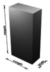

height
property

Source: Wikipedia
Wikipedia Page (Something wrong with this association? Let us know.)
Wikidata Page (Something wrong with this association? Let us know.)
Occurs in:
- automobile_battery__height
- automobile_bumper_bottom_above-ground__height
- empire-state-building__height
- channel_water_hydraulic-jump__height
- river-delta_plain~upper_vegetation__mean_of_height
- human__mean_of_height
- sea_shoreline_breaking-wave__height
- sea_shoreline_deepwater-wave~incoming__height
- sea_surface_storm_water_surge__height
- sea_surface_water_breaking-wave__height
- sea_surface_water_wave__height
- sea_surface_water_wave__time_mean_of_height
- sea_surface_water_wave__time_median_of_height
- sea_water_above-sea_bottom__height
- tree~bluejack-oak__mean_of_height
- river_channel_water_x-section__height